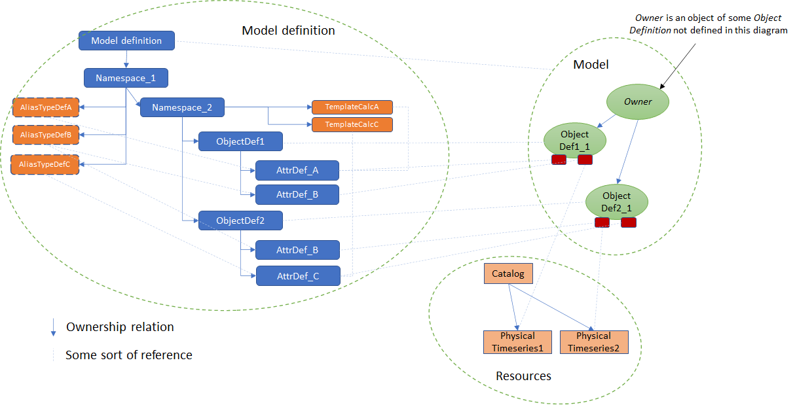
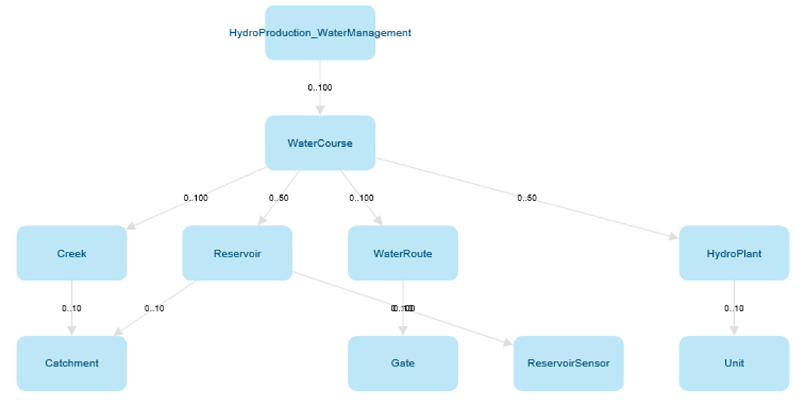
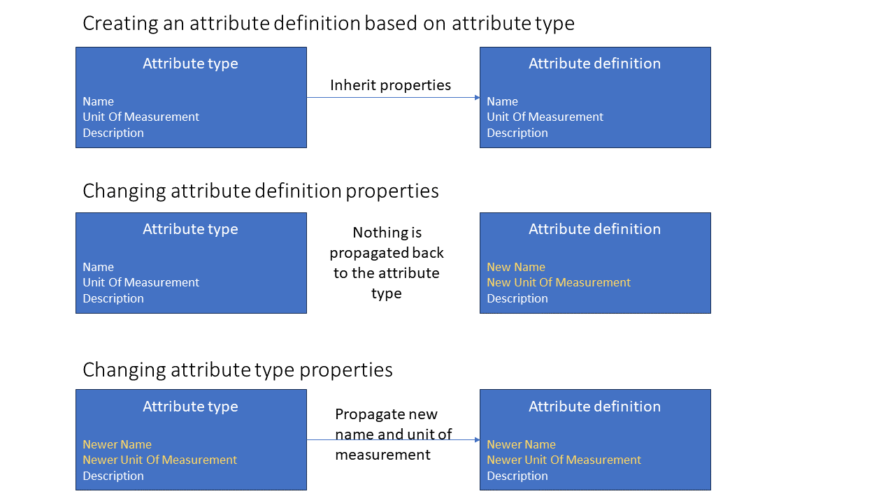

Modelling
Mesh is a data management system based on object modelling. Real world objects are represented in Mesh using the following concepts:
- models and model definitions
- objects and object definitions
- attributes and attribute definitions
Model definition contains one or more object definitions. Each object definition contains one or more attribute definitions. The definitions serve as blueprints and can be instantiated. Instances of the definitions are just called: models, objects and attributes.
For example we could have a model definition called EnergySystem that has object definition called PowerPlant that has two attribute definitions:
- NumberOfWindTurbines of integer type
- PowerProduction time series
Such definitions could be instantiated and so we could have: model called MyEnergySystem that has three objects:
- PowerPlantA with NumberOfWindTurbines = 5
- PowerPlantB with NumberOfWindTurbines = 10
- PowerPlantC with NumberOfWindTurbines = 3

Model definition
The Mesh model definition is designed to represent the structure of customer's infrastructure and assets. This can be a hydropower production system with water courses, creeks, reservoirs, water routes, gates, sensors, hydro plants and so on. The Mesh model definition contains object definitions, attribute types and attribute definitions of different types.
Additionally, model definition contains namespaces that are used for grouping and filtering purposes. The model definition is also a top-level namespace.
Each asset type is represented by an object definition.

Object definition
Contains attribute definitions of different types. Object definition could be compared to a C++ class.
For example: an object definition could represent a reservoir. It can have an attribute definition that represents current water level in a reservoir and an ownership relation attribute definition that represents how water is flowing to another object like hydro plant.
Attribute definition
Attribute definition may be singular or an array of one of the following types:
- Self-contained simple type: string, boolean, int, double or UTC timestamp.
- Time series attribute, it can be a calculation or a reference to a physical time series or virtual time series.
- XY-set
- Rating curve
- Ownership or link relation to an object definition. Refer to attributes and relations.
Each attribute definition has:
- ID
- name
- description
- value type, e.g. double attribute or time series attribute
- minimum and maximum cardinality, useful for definitions of an array type (e.g. array of boolean), for singular definitions they are always set to 1
Additionally specific attribute definitions may have additional fields like default value, accepted value ranges, etc. E.g.:
- time series attribute definition has template expression
- ownership relation attribute definition has target object type name.
Changing the name of an attribute definition will also change the names of all already existing attributes in the model to the new value.
Attribute definition could be compared to a C++ class member.
Attribute type
Used for creating re-usable attribute definitions. Once defined could be used by different object definitions for creating an attribute definition based on it.
Every attribute definition that is based on an attribute type will inherit name, description and unit of measurement (if applicable) of that attribute type. For enumeration attribute types the definitions will also inherit default value if not provided explicitly when creating the attribute definition.
Updates of all above mentioned properties (name, description and unit of measurement) can be done on attribute definition level. In such case the attribute type and attribute definition may have different property values. However, there is a special way of handling changes to name and unit of measurement done on attribute type level. Updating an attribute type name or unit of measurement will update also names and unit of measurements in all attribute definitions that were created based on the given attribute type. Other properties like description will change just the property on the attribute type level. See examples below:

Namespace
Used for grouping and filtering purposes in a model definition. You can compare it to a C++ namespace.
Namespace may contain:
- object definitions
- attribute types
- other (nested) namespaces
Template calculation definition
Defines calculation expression that could be used by time series attributes.
Tags
Special enumeration values that can be attached to attribute types and object definitions. Similar to namespaces they are used for grouping and filtering purposes.
Model
Based on the Mesh model definition, customers can build a model of their infrastructure by creating instances matching their specific assets. For example water courses named 'WaterCourse1', 'WaterCourse2', reservoirs named 'Reservoir1', 'Reservoir2' and so on. The resulting model is a tree where all the nodes are Mesh objects from the Mesh model that represent customer's physical assets. The root (top-level) object, is called model. It is the same as other regular objects, except it does not have an owner.
Model is an instance of model definition. There can be multiple models based on the same model definition.
Object
Mesh object contains attributes. Object is an instance of an object definition.
Objects are identified by IDs or paths, refer to objects and attributes paths for more information.
Attribute
Attribute is an instance of an attribute definition. Attribute contains a definition (inherited from attribute definition) and possibly a value of some type.
There are the following types of attributes:
-
Simple attributes - all of them have value(s) (defined on attribute level) and default value (defined on the attribute definition level). They are aggregating the following types:
-
Double attribute - additionally it has minimum value, maximum value and unit of measurement (defined on the attribute definition level).
Definition value types are
DoubleAttributeDefinitionfor singular value orDoubleArrayAttributeDefinitionfor collection of values. -
Integer attribute - additionally it has minimum value, maximum value and unit of measurement (defined on the attribute definition level).
Definition value types are
Int64AttributeDefinitionfor singular value orInt64ArrayAttributeDefinitionfor collection of values. -
Boolean attribute - definition value types are
BooleanAttributeDefinitionfor singular value orBooleanArrayAttributeDefinitionfor collection of values. -
String attribute - definition value types are
StringAttributeDefinitionfor singular value orStringArrayAttributeDefinitionfor collection of values. -
UTC time attribute - additionally it has minimum value and maximum values (defined on the attribute definition level).
The default, minimum and maximum value for this attribute is a string, where you can use expressions like:
UTC20220510072415.Definition value types are
UtcDateTimeAttributeDefinitionfor singular value orUtcDateTimeArrayAttributeDefinitionfor collection of values.
-
-
Time series attributes - they can be a:
-
reference to a physical time series: it has actual data (timestamps, values and flags) and meta data (e.g. curve type, resolution, etc.).
-
reference to a virtual time series: it has defined an expression to calculate time series data (similar to calculation time series).
-
calculation time series: it has defined an expression to calculate time series data. The calculation expression can be defined on the attribute definition level (then it is a template expression) or overwritten for the given attribute in the model (then it stored as local expression).
Definition value types are
TimeseriesAttributeDefinitionfor singular value orTimeseriesCollectionAttributeDefinitionfor collection of values. -
-
Ownership relation attributes - represent relations where one object owns another object. The owned object's owner is always an ownership relation attribute that belongs to some other object. There are two types of ownership relation attributes:
- one-to-one
- one-to-many
When creating a new object the owner must be an ownership relation attribute of one-to-many type. Ownership relation attribute has defined target object type name (on the attribute definition level) that shows what object value type is accepted to be added as child.
Definition value types are
ElementAttributeDefinitionfor singular value orElementCollectionAttributeDefinitionfor collection of values.Refer to relations for more information.
-
Link relation attributes - represent relations where one object may point to another object, but does not own it. There are two types of link relation attributes:
- one-to-one
- one-to-many
Definition value types are
ReferenceAttributeDefinitionfor singular value orReferenceCollectionAttributeDefinitionfor collection of values.Refer to relations for more information.
-
Versioned link relation attributes - extension of link relation attributes, where the target object can change over time. It consists of a list of pairs:
- Target object ID.
- Timestamp which indicates start of the period where the target object is active (linked to), the target object is active until the next target object in the list, if any, becomes active.
There are two types of versioned link relation attributes:
- one-to-one
- one-to-many
Definition value types are
ReferenceSeriesAttributeDefinitionfor singular value orReferenceSeriesCollectionAttributeDefinitionfor collection of values.Refer to relations for more information.
Resource
- Resource - Container storing data (e.g. time series), used by model.
- Physical time series - Time series data (timestamps, values and flags) and meta data (e.g. curve type, resolution, etc.).
- Virtual time series - Has defined an expression to calculate time series data (similar to calculation time series) but is stored in resources.
- Catalog - Used for grouping and filtering purposes. Catalog typically contains physical time series, virtual time series or other catalogs. Similar to namespaces in model definition.
Extended metadata
Extended metadata is an additional and optional information that can be set on:
- Namespaces and model definition (which is also a namespace)
- Attribute definitions
- Object definitions
It is a list of key-value pairs: category name and a JSON object. Maximum size of the JSON object serialized to a string is 4000 characters.
If a given attribute definition, object definition or namespace has more than one extended metadata, then the category names must be unique.
For example, an object definition may have 2 extended metadata entries:
* Category name MyCategory1 with associated JSON object:
{
"Labels" : ["Label A","Label B"],
"Something" : {"MaxValue":100}
}
- Category name
MyCategory2with associated JSON object:
{
"Active": true
}
Objects and attributes paths
Objects and attributes are identified by IDs or paths. Path is a string uniquely identifying an object in the model and contains all ancestors of a given object and optionally their ownership relation attributes.
For example the path for some reservoir could be:
Model/Mesh/MyArea/MyHydroProduction/MyWaterCourse/MyReservoir
This is a path where only objects are provided. A path where also ownership relation attributes, that connect those objects, are provided is called full name. For the same reservoir the full name path is:
Model/Mesh.To_Areas/MyArea.To_HydroProduction/MyHydroProduction.To_WaterCourses/MyWaterCourse.To_Reservoirs/MyReservoir
As you can see the attributes are provided after objects and a dot "." character. For example full name path for an attribute of the MyReservoir reservoir is:
Model/Mesh.To_Areas/MyArea.To_HydroProduction/MyHydroProduction.To_WaterCourses/MyWaterCourse.To_Reservoirs/MyReservoir.MaxVolume
Every path in Mesh model starts with Model/ prefix.
Mesh gRPC API returns always full names as paths when reading objects or attributes. The path containing attributes (full name path) is guaranteed to be unique, whereas depending on the model the path without attributes may be ambiguous.
Mapping
We strongly advise to use the above definitions, but some of them were already known under different names:
- Model definition - object model, meta model, repository (in Mesh Explorer)
- Object definition - element type, object type (in Mesh Configurator)
- Model - physical model
- Object - physical object
- Attribute - property
- Versioned XY set -
XYZSeries